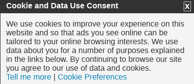
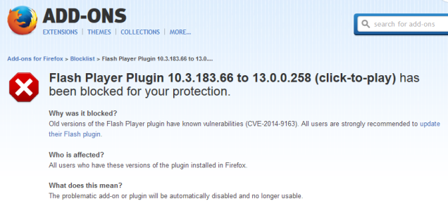

„Hütet euch vor falschen Propheten, die im Schafspelz zu euch kommen, aber innerlich sind sie rabenschwarze Wölfe“
Diese 2009 erfundene Browser-Kopfzeile initiiert Webseiten, die Sie besuchen, dass Sie nicht getrackt werden möchten. 9 Jahre und Tausende von Artikeln und Diskussionen über DNT später, und es gibt immer noch keinen Standard dafür, was genau „die Verfolgung" verhindern soll - obwohl schon länger versprochen wurde, einen zu erschaffen. Es versteht sich von selbst, dass Websites DNT so interpretieren können, wie sie wollen, oder es sogar ganz ignorieren. Wie viel Aufwand wurde mit diesem Blindgänger verschwendet - Aufwand, der für die Erstellung und Verbesserung von Browser-Erweiterungen hätte besser genutzt werden können, um Sie tatsächlich vor dem Tracking zu schützen. DNT hingegen gibt ahnungslosen Nutzern nur die Illusion einer Privatsphäre - was weit schlimmer ist, als gar nichts zu tun. Seien wir ehrlich - die Zusammenarbeit mit Trackern hätte sowieso nie funktionieren können – seit sie keinerlei Sorge dafür tragen, fair zu spielen.
Wer immer Zeit im Internet verbracht hat, konnte sicherlich einige unliebsame Cookie-Hinweise gesehen, wie z. B. :

Im Jahr 2011 hat die Europäische Union ein Gesetz erlassen, welches von den Websites verlangt, dass die Besucher über die Art der Daten, die auf ihren Computern gespeichert werden, seinen Vorzug genauso wie die Notwendigkeit , die Zustimmung der Benutzer einzuholen, bevor etwas gespeichert wird. Es gab auch Richtlinien für die Dauer der Existenz der Cookies. Wie auch immer ,ein Bericht hat gezeigt (archive) dass die meisten Websites nicht alle Anforderungen richtig erfüllen. Selbst wenn sie es täten, werden die Menschen, die von diesen Informationen profitieren würden, sie nicht verstehen und stattdessen durchklicken; während die, welche sich dessen bewusst sind, die Cookies bereits blockiert haben - aber immer noch von den unliebsamen Hinweisen gestört werden. Es sei auch erwähnt, dass die wichtigsten Tracking-Cookies - die Social-Network-Cookies - vom Gesetz ausgenommen sind! So können Sie immer noch von Facebook und Freunden getrackt werden, um über eine verpasste Gelegenheit zu reden..
Fast jeder Browser verbirgt dies unter verschiedenen Namen. Lassen Sie uns hier klarstellen - das tut nichts, was Sie vor neugierigen ISPs oder Trackern schützt; und, während die meisten Browser das zugeben – haben einige, wie Waterfox, versucht, eine Welle der Verwirrung zu stiften, um vorzugeben, dass ihrprivates Surfen verbessert wird (archive)etwas mehr bewirktEin Bericht hat gezeigt (archive)dass viele Menschen tatsächlich glauben, dass dieser Modus sie vor Online-Spionage schützt; meiner Meinung nach sollten Browser dies unterlassen, wenn sie ehrlich bleiben wollen - oder zumindest den Namen ändern.
YouTube-Frontends. Hooktube behauptete früher, dass sie Ihre Daten vor G (. . . oogle)hier zu sehen) - geheim halten - zumindest bevor sie gezwungen wurden, die YouTube-API zu verwenden. Allerdings sind sie immer noch mit den Videoservern von Google verbunden, so dass der eigentliche Grund für ihre Existenz ein Betrug war. Nun, Invidious tut das Gleiche, beansprucht aber nichts; trotzdem sind sie keine YouTube-Proxys. Hinweis: (ich denke, Februar 2019?). Aber egal, ich empfehle Dir, YouTube-Videos mit youtube-dl herunterzuladen - damit kannst Du sie so oft wie du willst anschauen, wann immer Du möchtest - ohne Werbung oder Verzögerung, Google-Verbindungen oder irgendwelche anderen Verbindungen.
Seit einigen Jahren kündigen Dienste, die traditionell für ihr Ausspionieren bekannt sind (wie Skype, Viber oder die von Facebook betriebeneWhatsApp (archive)) lautstark ihre Unterstützung einer „End-to-End"-Verschlüsselung an - was bedeuten sollte, dass nur Sie und die Person, mit der Sie kommunizieren, den Inhalt Ihrer Nachrichten sehen können. Es sind jedoch immer noch sie, die die Schlüssel generieren und sich daher auf ihre Vertrauenswürdigkeit verlassen. Auch viele vermeintlich „private Anbieter leiden unter diesem Fehler - lesen Sie meinen Report.Die Moral der Geschichte - wenn Sie die Verschlüsselung nicht selbst verwalten, ist sie nicht wirklich durchgängig und sollte nicht als vertrauenswürdig angesehen werden.

Das Flash Player Plugin 10.3.183.66 to 13.0.0.258 (zum Abspielen anklicken) wurde zu Ihrem Schutz blockiert. Warum wurde es blockiert?
Die alte Version des Flash-Players Plugin haben bekannte Schwachstellen (CVE2014-9163). Allen Benutzern wird daher dringend empfohlen, das Flash-Plugin zu aktualisieren. Was bedeutet das?
Das betroffene (problematische) Add-on oder Plug-in wird automatisch deaktiviert und ist nicht mehr verwendbar. Dies ist einfach eine riesige schlüpfrige Piste - zuerst waren es Plugins, dann Add-ons, dann Browsereinstellungen, die immer wieder über die Konfiguration oder den Abgrund gekippt wurden. Was kommt als nächstes - die Entscheidung, welche Seiten Sie besuchen dürfen oder nicht? Ist Google SafeBrowsing nicht genau das? Vielleicht werden sie eines Tages alle „unsichere"; HTTP-Websites blockieren. Das geht doch sicher zu weit - oder? Tatsächlich versuchen sowohl Firefox (archive) als auch Chrome (archive) schon seit langem, HTTP loszuwerden. Großartig, danke Mozilla und Google, dass sie mich vor all diesen bösartigen Dingen „beschützen"; - aber wer wird mich vor dir schützen? Das ist die eigentliche Frage. Natürlich wissen die Leute nicht, dass es ein Problem gibt, bis etwas, das sie regelmäßig benutzen, abbricht. Die Lösung besteht natürlich darin, nur Software zu verwenden, die Sie tatsächlich respektiert, anstatt Sie wie ein Baby zu behandeln; die Sicherheit liegt immer in der Verantwortung des Benutzers - man kann Menschen nicht vor allem „schützen". Selbst wenn sie könnten, wäre es nicht wünschenswert; es gibt immer einen Kompromiss zwischen Sicherheit und Funktionalität, und die Menschen sollten in der Lage sein zu wählen, an welchem Punkt des Spektrums sie sich wiederfinden wollen.
Eine Erweiterung der oben schon erwähnten; sie sind der Transporteur durch den unerwünschte Änderungen auf ahnungslose Benutzer übertragen werden. UI-Modifikationen, Entfernen von Konfigurationsoptionen oder die oben genannten Blockaden; unabhängig davon - automatische Updates übertragen die Kontrolle über die Software von den Benutzern an die Entwickler. Und es gibt keine Entschuldigung, den Benutzer zumindest nicht zu fragen, bevor er fortfährt. Die Horrorgeschichten über Updates, die Dinge zerbrechen, sind zahlreich - zum Beispiel:
Mein Firefox wurde gestern darauf aktualisiert. Er erstarrte, als ich versuchte, ihn zu benutzen. Der Computer blieb stehen, sodass ich den Netzschalter benutzen musste, um aus ihm herauszukommen. Ich habe Firefox im abgesicherten Modus ausprobiert und es ist immer noch eingefroren. Ich sehe Nachrichten in Mozilla Zine, die dasselbe sagen.
Ich würde mich sehr freuen, wenn mich das Firefox-Update über Änderungen an meinen Einstellungen im Detail informieren würde. Ich möchte die Chance haben, nicht von einer neuen Standardsuchmaschine oder einer deaktivierten https-Funktion überrascht zu werden.und
ich bemerkte es zum ersten Mal, als es die Einstellung „Nicht verfolgen"; einführte. Ich habe das aktiviert und das nächste Mal, als ich es überprüfte, wurde es deaktiviert. .
Jern informed me that Firefox reset the block lists setting of the browser's Tracking Protection feature from strict to basic when the browser was updated to version 50 from Firefox 49.0.2. Basic protection is the recommended and default value of the setting. It does not block as many trackers as the strict blocking list.und
Michel erzählte mir eine Woche später dass das aktuelle Firefox update (von 50.0.1 nach 50.0.2) bei den Grundeinstellungen eine andere Priorität vergibt. Anbei eine URL Zeichenkette die Michel für die Firefox Konfigurations-Seite geändert hat.
Die häufigsten Beschwerden nach dem Update auf Windows 10 waren Softwarekompatibilitätsprobleme, wie z. B. nicht oder gar nicht funktionierende Programme (21 Prozent), gefolgt von Hardwareproblemen wie Drucker und Lautsprecher, die nicht mehr funktionieren (16 Prozent). Mitglieder kämpften auch mit Problemen wie der Synchronisierung von E-Mail-Konten und der versehentlichen Löschung von persönlichen Dateien, sagte Which? „Einige Verbraucher litten unter einer Verlangsamung des PCs, und in einigen Fällen berichteten die Mitglieder über einen kompletten PC-Ausfall. Von denjenigen in der Umfrage, die dies erlebt haben, gaben 46 Prozent an, dass sie jemanden bezahlt haben, um es zu reparieren, zu durchschnittlichen Kosten von 67 Pfund pro Person, bemerkte die Verbrauchergruppe.
Ich wusste nicht, ob ich das hier oder in Principles of bad software design- aber der angebliche Sinn ist Sicherheit, also ist es hier. Wie funktioniert das? Kurz gesagt - bestimmte Seiten, wann immer ein Link auf sie gesetzt wird - werden Sie NICHT direkt dorthin gehen lassen, sondern nur durch ihre spezielle Weiterleitung. Wenn diese tatsächlich die Sicherheit verbessert, würde ich es einfach als einfaches Babying betrachten - ähnlich wie bei den automatischen Updates; aber die Realität ist viel bösartiger als sonst. Nicht nur die Link-Filter sind ärgerlich, sondern sie erleichtern auch die Verfolgung, indem sie die Website, die Sie verlassen, in die URL aufnehmen. Außerdem können die Leute den Link, auf den sie klicken, tatsächlich sehen, so dass der Sicherheitsvorteil bestenfalls zweifelhaft ist. Twitter geht noch weiter und verhindert, dass Benutzer wissen, wohin sie gehen - jede Webadresse wird durch ihren t. co- Kürzel ersetzt. Sie geben sogar zu, dass dies für die Zensur verwendet wird (archive):
Ein vom Linkdienst von Twitter konvertierter Link wird anhand einer Liste potenziell gefährlicher Websites überprüft.
Du brauchst dir diese Links nicht anzusehen, Sohn - Mami Twitter wird dich beschützen! Aber vielleicht sollten sie sich zuerst auf ihre eigene Sicherheit konzentrieren als auf die anderer; Steam zum Beispiel hatte einen Bruch (archive) bei dem Benutzer
auf die Spielebibliotheken anderer Personen zugreifen konnten und sensible Informationen wie Namen, Privatadressen, E-Mail-Adressen, Kaufhistorie, Paypal-Kontoinformationen und sogar teilweise Kreditkartennummern einsehen.
Twitter hatte ein noch schlechteres (archive) wo n dem bis zu 250 000 Konten gefährdet waren. Wie ich bereits sagte - Sicherheit sollte in der Verantwortung des Benutzers liegen; wir sind keine Babys und die Behandlung wie sie führt immer zu einer Katastrophe.
Mozillas angeblich privater Datei-Upload-Service hier.
Mozillas Passwortspeicherdiensthier genauer analysiert..
Sie haben viele davon im Laufe der Jahre gemacht - das jüngste zum Zeitpunkt des Schreibens ist https://www.eff.org/wp/who-has-your-back-2019 (archive). Kurz gesagt, der Bericht bewertet die Zensurpolitik der großen Unternehmen, aber die wichtigsten Kriterien - das heißt, wie viel sie tatsächlich zensieren - werden völlig ignoriert. Stattdessen konzentrieren sie sich darauf, ob die Zensoren Ihnen freundlicherweise sagen, dass Sie suspendiert wurden oder dass eine Regierung eine Vergütung verlangt hat. Und so bekommt ein bekannter Übertreter wie YouTube 4 verdammte Sterne von 6, was für ein Witz. Sie haben sogar einen Punkt bekommen, nur weil sie ein Beschwerdesystem haben, das nicht einmal funktioniert. Es gibt nur ein Ziel dieser Berichte - die Rechtfertigung des großen Ganzen, damit naive / unerfahrene Menschen ihre Dienste nicht aufgeben, die sie nicht respektieren.